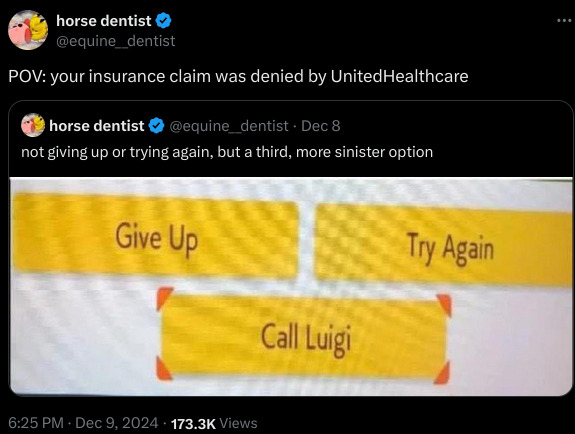
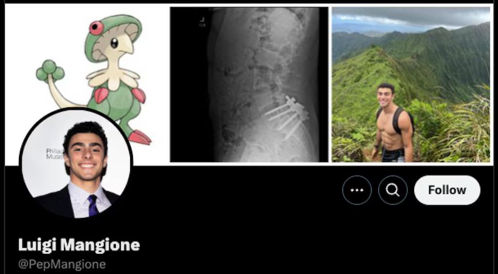

Tecnologia e Classe de 12/12/24
Denúncia de 10x1 no Zaffari
Bourbon condenado por racismo
Casos de racismo e morte no Carrefour
Notícias rápidas
Califórnia pode tornar-se primeiro estado do mundo a exigir rótulos de advertência em redes sociais: o projeto de lei visa alertar sobre os riscos potenciais dessas plataformas para crianças e adolescentes. Caso aprovado, as empresas serão obrigadas a exibir um “aviso em caixa preta” durante os primeiros 90 segundos de uso inicial para qualquer usuário, independentemente da idade, devendo ser reapresentado pelo menos uma vez por semana. O procurador-geral da Califórnia critica essas companhias por promoverem “recursos viciantes” e conteúdo prejudicial. As informações são do site The Verge.
- A proibição das redes sociais para crianças e adolescentes na Australia
- Brasil e outros países exigindo que redes sociais não tenham um feed 'sem login' para garantir a identidade e idade dos usuários
- Proibição de filtros em plataformas como o TikTok
- Pergunta: será que não é um pouco tarde para isso agora?
https://www.theverge.com/2024/12/10/24317835/california-social-media-warning-labels-bill
Devin, primeiro engenheiro de software de IA, é disponibilizado ao público geral: o modelo está disponível por meio de uma assinatura mensal de 500 dólares, direcionada a equipes de desenvolvedores, a qual inclui acesso ilimitado, integração com o Slack, e ferramentas como IDE e API. A Cognition, empresa responsável, destaca que a tecnologia pode ser aplicada em diversas áreas, e recomenda seu uso para resolver bugs de frontend e realizar refatorações de código. O Devin também interage de forma automática em comentários de Pull Requests no GitHub. As informações são do blog da Cognition.
65% dos funcionários ignoram políticas de segurança cibernética em prol da eficiência: segundo um estudo com cerca de 14 mil trabalhadores de diversos países, muitos deles consideram os protocolos incômodos e uma barreira à produtividade, como a exigência de senhas complexas, logins frequentes e autenticação multifator. Como resultado, muitos reutilizam e compartilham credenciais, por exemplo. Recomenda-se que empresas invistam em treinamentos para conscientizar os colaboradores sobre a importância da segurança digital. As informações são da Forbes e do site Help Net Security.
54% dos textos longos no LinkedIn são gerados por IA, segundo estudo: ao todo, foram analisados mais de 8,7 mil postagens entre janeiro de 2018 e outubro de 2024, que continham 100 palavras ou mais. Foi identificado um aumento significativo no uso de modelos após o lançamento do ChatGPT em 2022, com um crescimento de 189% entre janeiro e fevereiro de 2023. Em resposta, o LinkedIn afirma que busca limitar a visibilidade de postagens de baixa qualidade, e que o conteúdo identificado no estudo era “assistido por IA”, e não inteiramente criado por essas ferramentas. As informações são do site The Register.
https://www.theregister.com/2024/11/28/linkedin_ai_posts/
API do Bluesky permite extrair postagens de usuários para treinar modelos de linguagem: Daniel van Strien, especialista em curadoria de machine learning da Hugging Face, conseguiu utilizar a API Firehose da própria plataforma para extrair um milhão de posts públicos, a fim de viabilizar pesquisas e estudos relacionados ao aprendizado de máquina. O Bluesky afirma que está explorando formas de permitir que os usuários expressem externamente suas preferências de consentimento quanto ao uso de informações, e promete divulgar mais detalhes “em breve”. As informações são do site TechCrunch.
Memes do Luigi




O que é relevante sobre Luigi Mangione
-
No dia 04/12 ele assassinou o CEO da United Healthcare Group, Brain Thompson, com 3 tiros no momento que ele saía do hotel Hilton no centro de Manhattan.
-
Aparentemente ele é formado em Ciência da Computação e Engenharia por uma Ivy League (universidade de bacana)
-
O que não me surpreende porque ele parece alguns colegas mais 'amostradinhos' que eu tive
-
Politicamente é muito mais interessante o que ele representa do que as postagens nas redes sociais.
-
O pessoal raspou tudo nas redes e encontrou admiração por Elon Musk (babaca) e Peter Thiel (vampiro babaca), um review do manifesto do Unabomber e um manifesto dele mesmo (bem simples)
-
O hábito de procurar a presença de uma pessoa na internet para 'entender como ela pensa' é hoje quase um reflexo. Mas pense, por exemplo, o que isso diria sobre você hoje? Seria preciso?

-
-
Algumas mídias tem tentado pintar a situação como 'um lunático' radicalizado, mas uma análise do que temos até agora mostra um sujeito bastante inteligente e com um senso de justiça, que provavelmente teve problemas de saúde e experiências negativas com seguradoras. Ou até mesmo está apenas tendo empatia pelas pessoas que sofrem com isso.
-
Também falaram que ele jogava o jogo de assassinato 'Among Us' kkkkkkk
-
Muita gente se 'surpreendeu' com o apoio quase unânime do seu ato. Porém, esses são sintomas da luta de classes e não existe polarização quando os interesses dos trabalhadores ficam claros. O necessário é a consciência de como usar essa raiva.
-
Vídeo da 404 Media tocou em diversos desses assuntos em mais detalhes e o resumo do mimimidias também ficou ótimo
- A UHG aparentemente estava usando uma inteligência artificial para cortar custos e negar o máximo de pedidos de cobertura
- Logo após o assassinato diversas empresas de seguros de saúde removeram de seus sites e redes as informações públicos sobre seus CEOs
- A arma usada para o crime era uma 'arma fantasma', sem registro e trilha de documentos. Por que ela foi feita com impressão 3D e peças compradas avulsas. Talvez seja o primeiro assassinato desse calibre feito com uma arma de impressora 3D
- A UHG já foi dona do Grupo Amil no brasil de 2012 a 2023
- O apoio majoritário que o assassinato recebeu na internet veio junto com diversos relatos de pessoas que tiveram seus entes queridos 'assassinados' lentamente por planos de saúde nos EUA.
- Diversas dessas manifestações foram censuradas pelas plataformas de redes sociais e eu peço encarecidamente que me encontrem alguém falando que o acontecimento é uma censura em massa?
- Em resumo: não é uma questão de elogiar esse ato e nem achar que esse tipo de ato pode resolver qualquer coisa. A UHG continua lá.
- Porém temos que usar esses momentos para conscientizar sobre a luta de classes, incentivar o ódio à burguesia e a esse sistema doente. Um exemplo é a discussão que isso abriu nos EUA e no mundo e a queda nas ações da empresa.
- CEOs são representantes políticos da burguesia e não podem andar tranquilos pelas ruas.